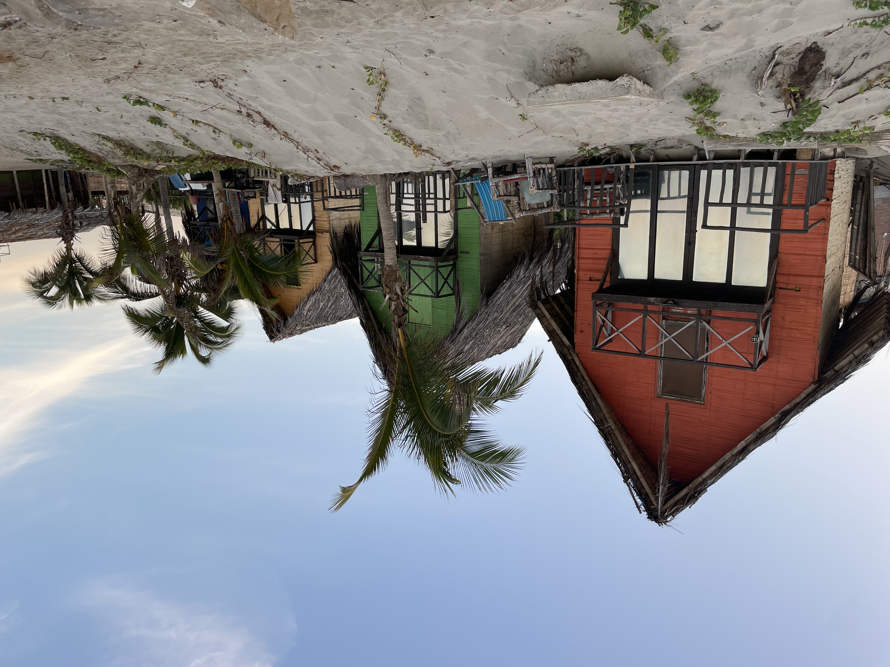

11 Off the
beaten track
The long journey,
an unusual route and
new encounters.

 After three full days of travel I finally arrived in the capital of Peru, Lima. Night had already fallen and I was standing with my suitcase neatly at the airport parking lot, waiting for the bus, which of course was nowhere to be seen. The buildings stood out with paint and decorations in all the colors of the rainbow. A little further away was a group of musicians singing traditional Peruvian songs. Despite the friendliness, I was still not completely reassured. On the internet I not only came across that Peruvians like ceviche, white fish steeped in lemon juice and that the famous 15th century Inca city of Machu Picchu is located there, but also that you should be on the lookout for theft after sunset. I didn't have a mobile connection yet, so I was extra relieved when, after an hour of waiting, I was able to board a bus in the same direction with another bus company.
After three full days of travel I finally arrived in the capital of Peru, Lima. Night had already fallen and I was standing with my suitcase neatly at the airport parking lot, waiting for the bus, which of course was nowhere to be seen. The buildings stood out with paint and decorations in all the colors of the rainbow. A little further away was a group of musicians singing traditional Peruvian songs. Despite the friendliness, I was still not completely reassured. On the internet I not only came across that Peruvians like ceviche, white fish steeped in lemon juice and that the famous 15th century Inca city of Machu Picchu is located there, but also that you should be on the lookout for theft after sunset. I didn't have a mobile connection yet, so I was extra relieved when, after an hour of waiting, I was able to board a bus in the same direction with another bus company.
 Before I knew it we were driving on a highway, right along the beach and along the edge of this megacity of 10 million inhabitants. We drove through Callao, a neighborhood where there is a lot of poverty and a lot of crime. When you look out your window you can easily imagine that as a white man you might not walk around there at night. Everywhere you see houses made of corrugated iron, dogs on the street and people in bare feet. After an hour the bus approached my neighborhood of Barranco. A much more modern and luxurious neighborhood by South American standards, but nowhere near comparable to European cities. Power cables at eye level, missing manhole covers, greengrocer with grandfather, father and grandson, smiling kindly. What an impression! From the bus stop it was only a short walk to my hostel, called Kokopelli. A beautiful old palace with spacious rooms, very friendly staff and of course very desirable for me, a co-working space.
Before I knew it we were driving on a highway, right along the beach and along the edge of this megacity of 10 million inhabitants. We drove through Callao, a neighborhood where there is a lot of poverty and a lot of crime. When you look out your window you can easily imagine that as a white man you might not walk around there at night. Everywhere you see houses made of corrugated iron, dogs on the street and people in bare feet. After an hour the bus approached my neighborhood of Barranco. A much more modern and luxurious neighborhood by South American standards, but nowhere near comparable to European cities. Power cables at eye level, missing manhole covers, greengrocer with grandfather, father and grandson, smiling kindly. What an impression! From the bus stop it was only a short walk to my hostel, called Kokopelli. A beautiful old palace with spacious rooms, very friendly staff and of course very desirable for me, a co-working space.
I may experience backpacker life again at the age of thirty, in a dormitory with 16 beds, with people full of travel plans who tell each other where they want to go. It was an exciting first week with the biggest challenge: When do I let go and be a tourist, and when do I dive behind my PC to program? You can eat out for 4 euros, but every time for breakfast, lunch and dinner, you're done with that after a day, especially when you consider that I hardly ever went out to eat in Spain. Wow, Spain, that beautiful life seems like ages ago. I gave myself some time to get used to Lima and got into it a bit better in the last few days, partly thanks to a table tennis tournament in the hostel, a bachata party and a night out organized by an app group called 'Expats and friends in Lima'.
For the first time in 2.5 years I met a 21 year old programmer who, like me, was working on artificial intelligence. But then he took it to the next level. After finishing a beer, I spoke to him at 2am and he said he couldn't go to sleep yet because his models hadn't finished training yet. He worked for a mining network called Bittensor where 'the network' was his employer and he was paid in bitcoin. Although a bit extreme, meeting someone who also has such a great passion for artificial intelligence, it was also very inspiring and triggered me to open the laptop after a few days. In the meantime, most backpackers held off the hostel are mainly concerned with what their trip would look like. Almost everyone heads south for the lagoons of Huacachina, the Galapagos of Peru and Lake Titicaca. But to visit those 'highlights' in such a procession of travelers according to a certain schedule, that was of course not for me. With a 3-month visa I was in no hurry at all, so I left, a bit stubbornly, towards the north where I had heard that surfing was good. While still in the Netherlands, I already had the idea in my head to rent an apartment somewhere by the sea, do some programming and enjoy the beach in my spare time.
 It was so far by bus that it took me two nights to get to the city of Mancora, in Northern Peru. After surviving the first night bus, I looked for a hostel/apartment to stay in, but everything turned out to be full because of the holidays celebrating independence from Spanish colonialism. Fortunately, I found a bed in an affordable hostel on the Hostelworld app, although this was a party hostel. And the coworking space with which the hostel advertised turned out to consist of two patio chairs and a bar table next to the DJ boat. I immediately learned to be flexible. The first days here took quite some getting used to. My first impression was what a big mess here, with cockroaches everywhere (which later turned out to be crickets) and honking tuc tucs. I could easily spend a morning here looking for a suitable place to eat, a place to wash your clothes or look for a nice surfing school. When the holidays arrived, three Peruvian boys from near Lima entered my dorm: Manuel, Oscar and Martin. They were super friendly and always invited me to do things together. In Lima it was more common to speak English so I was happy that we could finally move on to practicing Spanish. When the party in the hostel with all kinds of games was over, we drove to a location outside Mancora where another techno party was going on. The tuk tuk was full so the driver let me hang on the back of the tailgate, which was no problem. It had been so long since I had such a spontaneous evening, and for a moment the old Jorrit was back again, who had loved visiting festivals and going out in home town Breda.
It was so far by bus that it took me two nights to get to the city of Mancora, in Northern Peru. After surviving the first night bus, I looked for a hostel/apartment to stay in, but everything turned out to be full because of the holidays celebrating independence from Spanish colonialism. Fortunately, I found a bed in an affordable hostel on the Hostelworld app, although this was a party hostel. And the coworking space with which the hostel advertised turned out to consist of two patio chairs and a bar table next to the DJ boat. I immediately learned to be flexible. The first days here took quite some getting used to. My first impression was what a big mess here, with cockroaches everywhere (which later turned out to be crickets) and honking tuc tucs. I could easily spend a morning here looking for a suitable place to eat, a place to wash your clothes or look for a nice surfing school. When the holidays arrived, three Peruvian boys from near Lima entered my dorm: Manuel, Oscar and Martin. They were super friendly and always invited me to do things together. In Lima it was more common to speak English so I was happy that we could finally move on to practicing Spanish. When the party in the hostel with all kinds of games was over, we drove to a location outside Mancora where another techno party was going on. The tuk tuk was full so the driver let me hang on the back of the tailgate, which was no problem. It had been so long since I had such a spontaneous evening, and for a moment the old Jorrit was back again, who had loved visiting festivals and going out in home town Breda.
The plan of renting an apartment and surfing turned out to be more difficult to realize than previously thought. Then again there was no desk available, or the price was four times higher than I had in mind. Someone I spoke to from Lima almost seemed to have arranged something for me when he suddenly asked me if I would pay for his insurance for his trip to Europe in exchange. Huh! And if you add 20 euros for a day of surfing, your salary will be gone in no time. I was now having back pain from programming in my bunk bed and thought: I'll book my next destination, a two-hour drive from the coast, with a comfortable bed, a desk and, above all, a nice place without other people. That eventually became Piura.
 The three Peruvian guys with whom I had a good connection visited a Corona Sunset Festival in the nearby town of Organos the next day. Bearing in mind that I had decided to do more spontaneous things here in Peru, I said, "Hey, can I still join you?" It was a great experience. They decorated the festival with all kinds of beige-colored decor and a stage with two animals and a sun that referred to the logo of the divine Corona beer. The music alternated with reggae, techno, and all kinds of Latin such as the record ‘Ojitos lindos’. Especially when the sun set, it became an atmospheric intention. When you look at the endless sea, it is unreal that you are so far away from home. At the end of the party I had a nice chat with a girl named Veronica. who invited me to visit her holiday bungalow in Organos the next day. So the next day I said goodbye to the Peruvian boys at the hostel and left for Organos where there was a wooden bungalow on a large mountain on the edge of the city. It was a 38-year-old enterprising lady from Lima who rents out several houses on Airbnb and also happens to have studied forest and nature management, just like me. This house was not just any bungalow because it had a swimming pool and a phenomenal 180 degree view of the entire coastline. It was nice to get to know each other a little better and the next day I actually left by bus to Piura.
The three Peruvian guys with whom I had a good connection visited a Corona Sunset Festival in the nearby town of Organos the next day. Bearing in mind that I had decided to do more spontaneous things here in Peru, I said, "Hey, can I still join you?" It was a great experience. They decorated the festival with all kinds of beige-colored decor and a stage with two animals and a sun that referred to the logo of the divine Corona beer. The music alternated with reggae, techno, and all kinds of Latin such as the record ‘Ojitos lindos’. Especially when the sun set, it became an atmospheric intention. When you look at the endless sea, it is unreal that you are so far away from home. At the end of the party I had a nice chat with a girl named Veronica. who invited me to visit her holiday bungalow in Organos the next day. So the next day I said goodbye to the Peruvian boys at the hostel and left for Organos where there was a wooden bungalow on a large mountain on the edge of the city. It was a 38-year-old enterprising lady from Lima who rents out several houses on Airbnb and also happens to have studied forest and nature management, just like me. This house was not just any bungalow because it had a swimming pool and a phenomenal 180 degree view of the entire coastline. It was nice to get to know each other a little better and the next day I actually left by bus to Piura.
 And then after such beautiful spontaneous encounters you suddenly find yourself spending a week in a small room with only a bed, table and chair in the middle of the chaos of an unknown city of Piura. I haven't met a single non-Peruvian here in three days. For safety's sake, I decided to return home around 6 p.m., when it gets dark, and not to go out on the street alone anymore. This makes it feel a bit like you are in hiding. It all sounds worse than it is. And there is also plenty of time to let the entire journey so far sink in. Entertaining myself with games of solitaire, my book 'Fall of Giants' by Kenn Follet or doing a good old sports session via Insanity workout videos in my much too small room. And once I'm working on coding, it's really great to be doing it. Even now that it is a bit quieter, I am going to get through the days well. Dear people, I hope you are doing well and I am pleased that you have read the blog again. Many greetings from Piura.
And then after such beautiful spontaneous encounters you suddenly find yourself spending a week in a small room with only a bed, table and chair in the middle of the chaos of an unknown city of Piura. I haven't met a single non-Peruvian here in three days. For safety's sake, I decided to return home around 6 p.m., when it gets dark, and not to go out on the street alone anymore. This makes it feel a bit like you are in hiding. It all sounds worse than it is. And there is also plenty of time to let the entire journey so far sink in. Entertaining myself with games of solitaire, my book 'Fall of Giants' by Kenn Follet or doing a good old sports session via Insanity workout videos in my much too small room. And once I'm working on coding, it's really great to be doing it. Even now that it is a bit quieter, I am going to get through the days well. Dear people, I hope you are doing well and I am pleased that you have read the blog again. Many greetings from Piura.